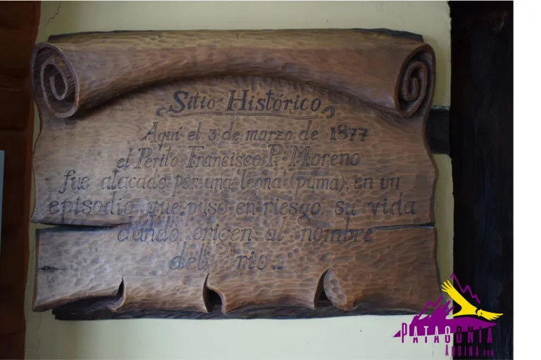

Como inicio el parador luego del ataque de una puma
Ezequiel Candial 30/07/23

En 1894, ante el permanente crecimiento de los establecimientos agropecuarios de la zona, y en
el preciso lugar en donde 17 años antes Francisco P. Moreno (el Perito Moreno, consagrado científico
y explorador argentino) fuera atacado y mal herido por una hembra de puma ("LEONA" en la jerga
patagónica), dando así origen al nombre del río, el Gobierno Nacional de aquel entonces manda
construir la primera balsa que permitía el traslado de los colonos, sus animales y mercaderías,
desde y hacia la costa Atlántica, viaje que en aquella época demoraba más de un mes. A 200 mts.
río abajo aún se pueden observar los anclajes por los cuales se desplazaba dicha balsa. La misma
prestó sus servicios hasta 1974, fecha en que se inauguró el puente actualmente existente.
Simultáneamente, y para dar alojamiento a los pobladores que, en su gran mayoría tardaban varios
días en cruzar sus piños de ovejas (la balsa cargaba tan sólo 200 animales), una familia de
inmigrantes dinamarqueses, los Jensen, daba comienzo a la construcción del Parador y Hotel de
Campo La Leona, el cual desde su fundación, ha sido testigo de importantes acontecimientos
históricos que le dieran fama a nivel mundial.
Dicen que en 1905 tres "gringos" se habrían hospedado aquí por un período de tiempo no muy
prolongado para luego seguir viaje hacia un rumbo desconocido. Tiempo más tarde, y ante la
presencia de una comisión policial que les mostrara diversas fotografías, los propietarios
de aquel entonces habrían reconocido a sus distinguidos visitantes. Se habría tratado nada
menos que de Butch Cassidy, Sundance Kid y su esposa Ethel Place, quienes luego de robar el
Banco de Londres y Tarapacá en Río Gallegos habrían efectuado en su huída, una "parada técnica" en La Leona.
Fue por esa misma época que un famoso bandolero uruguayo, Asensio Brunel, asoló también estos parajes.
Montando a "pelo", vestido con pieles de puma y alimentándose exclusivamente de lengua cruda de yegua,
sus correrías adquirieron ribetes de leyenda. Algunos historiadores dicen que este ermitaño, mezcla de
Robin Hood y Billy the Kid fue muerto por colonos de la zona en un tiroteo digno de las mejores películas
del Far West. Otros, que fue emboscado y asesinado por el cacique Kenkel en el río Senguer (Provincia del
Neuquén). A decir verdad, el lugar y forma en que finalizó sus andanzas sigue siendo aún hoy un misterio.
La familia Petersen junto con el alemán Alfred Brodersen adquieren el establecimiento en 1910. Amplían el
hotel de dos a cuatro habitaciones, todas ellas construidas en ladrillos de adobe, y edifican una pulpería
y almacén de ramos generales, los cuales hoy funcionan como el bar y la confitería del Parador. Años más
tarde fueron Jul y Feliza Christensen los propietarios y ellos, a su vez, lo vendieron a la Flia. Saldia-Westerlund.
La primera habilitación comercial data del año 1916 y la misma fue otorgada en Buenos Aires ya que la actual
Provincia de Santa Cruz era en esa época un Territorio Nacional y todos los trámites administrativos debían
realizarse indefectiblemente en la Capital Federal.
Las largas esperas para cruzar el río, la aglomeración de peones rurales y el exceso de alcohol produjeron
gran cantidad de riñas, que en aquel entonces eran dirimidas mediante "duelos criollos" que a menudo terminaban
con la vida de uno o más de los contrincantes.
En el año 1921 se produjo en la Patagonia Austral la huelga de los peones de estancias que finalizó con la sangrienta
represión ordenada por el Gobierno Nacional de aquel entonces. La Leona no fue ajena a estos trágicos acontecimientos.
Se sabe de muchos fugitivos que se escondieron aquí para luego seguir huyendo de la persecución ordenada por el Teniente
Coronel Héctor Varela, comandante militar de la Provincia de Santa Cruz. Algunos lograron escapar, otros menos afortunados
cayeron en manos de sus perseguidores y fueron posteriormente ejecutados sin juicio alguno.